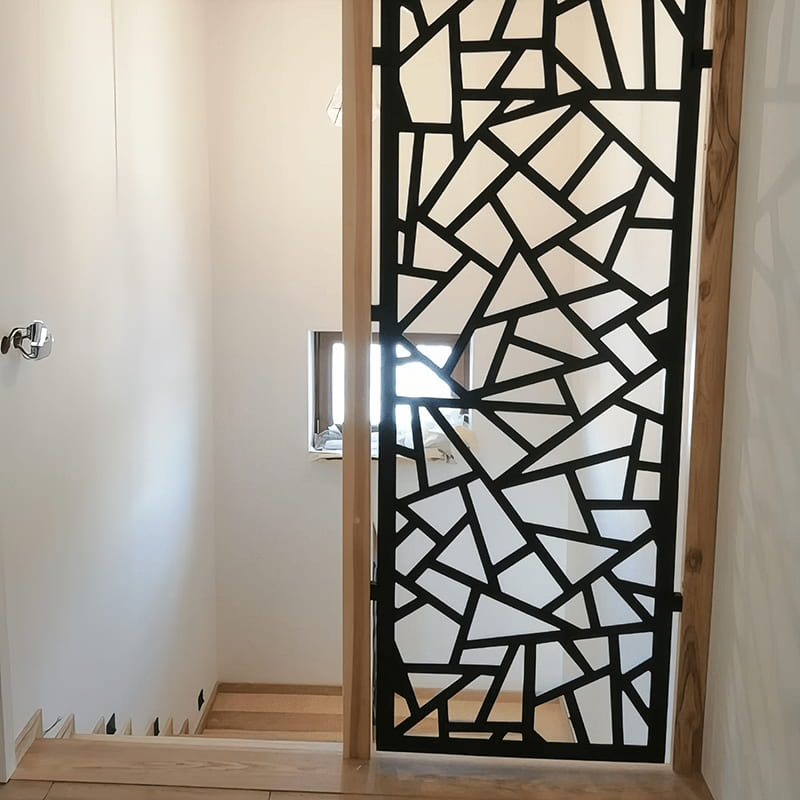

Wybór schodów to jedna z najważniejszych decyzji podczas wykańczania domu. Muszą być nie tylko bezpieczne i trwałe, ale też stanowić spójny element dekoracyjny wnętrza. Coraz chętniej sięgamy po schody drewniane z metalową balustradą — połączenie, które idealnie wpisuje się w styl nowoczesny, loftowy i skandynawski.
Poniżej prezentujemy jedną z naszych ostatnich realizacji — schody wykonane dla klienta z okolic Bielska-Białej, gdzie drewno dębowe zestawiliśmy z balustradą malowaną proszkowo na czarny mat.

Dlaczego drewno + metal to duet idealny?
Połączenie naturalnego drewna z surowością stali to wybór doceniany przez inwestorów w całym województwie śląskim i małopolskim. Takie rozwiązanie ma kilka istotnych zalet:
- Lekkość wizualna — metalowe balustrady o prostych, geometrycznych formach nie przytłaczają wnętrza. Nawet w małym przedpokoju schody wyglądają lekko i nowocześnie.
- Trwałość na lata — drewno najwyższej klasy w połączeniu z proszkowo malowaną stalą to gwarancja odporności na uszkodzenia mechaniczne.
- Uniwersalny design — pasuje zarówno do surowych betonowych ścian, jak i jasnych, przytulnych salonów.
Schody na wymiar – dopasowane do Twojego wnętrza
Każdy dom jest inny. Dlatego oferujemy schody na wymiar, projektowane z uwzględnieniem specyfiki danego pomieszczenia — od otworu schodowego, przez styl wnętrza, po preferencje dotyczące drewna i balustrady. Niezależnie od tego, czy interesują Cię schody na beton, czy konstrukcje samonośne, zapewniamy precyzję wykonania co do milimetra.
Realizujemy schody drewniane na terenie aglomeracji śląskiej
Działamy lokalnie, co pozwala na szybki kontakt i sprawne przeprowadzenie bezpłatnych pomiarów. Obsługujemy m.in.:
- Katowice
- Gliwice
- Zabrze
- Bytom
- Chorzów
- Dąbrowa Górnicza
- Ruda Śląska
- Siemianowice Śląskie
- Tychy
- Sosnowiec
- Jaworzno
- Mysłowice
Gatunki drewna, które stosujemy
Do realizacji schodów z metalową balustradą najlepiej sprawdzają się twarde, szlachetne gatunki drewna. W tej realizacji zastosowaliśmy dąb — król wśród materiałów schodowych. Oferujemy również:
- Dąb — twardy, odporny na ścieranie, dostępny w wielu odcieniach bejcy
- Jesion — jasny, wyrazista struktura słojów, doskonała sprężystość
- Orzech — ciemnobrązowy, ekskluzywny, idealny do eleganckiego wnętrza
Drewno jest żywym materiałem — pracuje wraz ze zmianami wilgotności i temperatury. Dobrze wysuszone i właściwie zamontowane schody drewniane nie będą skrzypieć ani pękać przez długie lata. — Łukasz Kleszcz, stolarz z ponad 20-letnim doświadczeniem
Często zadawane pytania
Jakie schody wybrać do nowoczesnego domu?
Modele łączące drewno z metalem są obecnie najchętniej wybierane ze względu na estetykę i łatwość utrzymania czystości. Czarny mat, antracyt lub stal szczotkowana doskonale komponują się z dębem i jesionem.
Czy oferujecie projektowanie schodów?
Tak, każdy montaż poprzedzamy wykonaniem indywidualnego projektu na wymiar. Bezpłatna wizja lokalna i wycena nie zobowiązują do zakupu.
Jak długo trwa montaż?
Sam montaż schodów na miejscu trwa zazwyczaj 1–3 dni, zależnie od stopnia skomplikowania konstrukcji. Całkowity czas realizacji od zamówienia do montażu wynosi 6–10 tygodni.
Efekt końcowy
